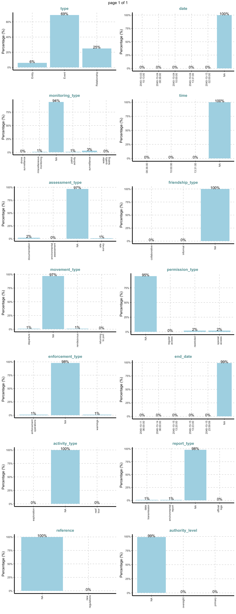

Code
options(repos = c(CRAN = "https://cloud.r-project.org"))
install.packages("pacman")RStudio and Quarto are used as the primary analytical tools for this challenge. The data will be analyzed and visualized using the tidyverse suite and advanced network visualization packages to explore the knowledge graph and temporal communication dynamics.
Before we get started, it is important for us to ensure that the required R packages have been installed. If you have yet to install pacman, install it by typing below in the Console:
options(repos = c(CRAN = "https://cloud.r-project.org"))
install.packages("pacman")We then load the following R packages using the pacman::p_load() function:
pacman::p_load(tidyverse, tidygraph, ggraph, jsonlite, ggplot2,
SmartEDA, lubridate, ggthemes, readr, readxl, knitr, dplyr, visNetwork)The core dataset is a knowledge graph derived from radio communications intercepted over a two-week period on Oceanus. Each node in the graph represents an entity such as a person, vessel, pseudonym, or organization. Edges represent interactions or co-occurrences in communications. Edge attributes include timestamp, topic, message type, and possible pseudonym use.
Supplementary information from the story given on the Mini Challenge page includes:
Entity roles and affiliations (e.g., Green Guardians, Sailor Shift’s crew).
Known pseudonyms (e.g., “Boss”, “The Lookout”).
Historical involvement in illicit activities (e.g., Nadia Conti).
Refer to the data description details in Appendix A
graph_data <- fromJSON("data/MC3_graph.json")
schema_data <- fromJSON("data/MC3_schema.json")glimpse(graph_data)List of 5
$ directed : logi TRUE
$ multigraph: logi FALSE
$ graph :List of 4
..$ mode : chr "static"
..$ edge_default: Named list()
..$ node_default: Named list()
..$ name : chr "VAST_MC3_Knowledge_Graph"
$ nodes :'data.frame': 1159 obs. of 31 variables:
..$ type : chr [1:1159] "Entity" "Entity" "Entity" "Entity" ...
..$ label : chr [1:1159] "Sam" "Kelly" "Nadia Conti" "Elise" ...
..$ name : chr [1:1159] "Sam" "Kelly" "Nadia Conti" "Elise" ...
..$ sub_type : chr [1:1159] "Person" "Person" "Person" "Person" ...
..$ id : chr [1:1159] "Sam" "Kelly" "Nadia Conti" "Elise" ...
..$ timestamp : chr [1:1159] NA NA NA NA ...
..$ monitoring_type : chr [1:1159] NA NA NA NA ...
..$ findings : chr [1:1159] NA NA NA NA ...
..$ content : chr [1:1159] NA NA NA NA ...
..$ assessment_type : chr [1:1159] NA NA NA NA ...
..$ results : chr [1:1159] NA NA NA NA ...
..$ movement_type : chr [1:1159] NA NA NA NA ...
..$ destination : chr [1:1159] NA NA NA NA ...
..$ enforcement_type : chr [1:1159] NA NA NA NA ...
..$ outcome : chr [1:1159] NA NA NA NA ...
..$ activity_type : chr [1:1159] NA NA NA NA ...
..$ participants : int [1:1159] NA NA NA NA NA NA NA NA NA NA ...
..$ thing_collected :'data.frame': 1159 obs. of 2 variables:
.. ..$ type: chr [1:1159] NA NA NA NA ...
.. ..$ name: chr [1:1159] NA NA NA NA ...
..$ reference : chr [1:1159] NA NA NA NA ...
..$ date : chr [1:1159] NA NA NA NA ...
..$ time : chr [1:1159] NA NA NA NA ...
..$ friendship_type : chr [1:1159] NA NA NA NA ...
..$ permission_type : chr [1:1159] NA NA NA NA ...
..$ start_date : chr [1:1159] NA NA NA NA ...
..$ end_date : chr [1:1159] NA NA NA NA ...
..$ report_type : chr [1:1159] NA NA NA NA ...
..$ submission_date : chr [1:1159] NA NA NA NA ...
..$ jurisdiction_type: chr [1:1159] NA NA NA NA ...
..$ authority_level : chr [1:1159] NA NA NA NA ...
..$ coordination_type: chr [1:1159] NA NA NA NA ...
..$ operational_role : chr [1:1159] NA NA NA NA ...
$ edges :'data.frame': 3226 obs. of 5 variables:
..$ id : chr [1:3226] "2" "3" "5" "3013" ...
..$ is_inferred: logi [1:3226] TRUE FALSE TRUE TRUE TRUE TRUE ...
..$ source : chr [1:3226] "Sam" "Sam" "Sam" "Sam" ...
..$ target : chr [1:3226] "Relationship_Suspicious_217" "Event_Communication_370" "Event_Assessment_600" "Relationship_Colleagues_430" ...
..$ type : chr [1:3226] NA "sent" NA NA ...glimpse(schema_data)List of 1
$ schema:List of 2
..$ nodes:List of 3
.. ..$ Entity :List of 2
.. ..$ Event :List of 2
.. ..$ Relationship:List of 2
..$ edges:List of 3
.. ..$ description: chr "Connections between nodes in the knowledge graph"
.. ..$ is_inferred: chr "bool"
.. ..$ types :'data.frame': 6 obs. of 5 variables:Let’s explore each edges and nodes!
First we need to extract the nodes and links tibble data frames using as_tibble() of tibble package package into two separate tibble dataframes called nodes_tbl and edges_tbl respectively.
nodes_tbl <- as_tibble(graph_data$nodes)
edges_tbl <- as_tibble(graph_data$edges)table(nodes_tbl$type)
Entity Event Relationship
72 802 285 kable(head(nodes_tbl))| type | label | name | sub_type | id | timestamp | monitoring_type | findings | content | assessment_type | results | movement_type | destination | enforcement_type | outcome | activity_type | participants | thing_collected | reference | date | time | friendship_type | permission_type | start_date | end_date | report_type | submission_date | jurisdiction_type | authority_level | coordination_type | operational_role |
|---|---|---|---|---|---|---|---|---|---|---|---|---|---|---|---|---|---|---|---|---|---|---|---|---|---|---|---|---|---|---|
| Entity | Sam | Sam | Person | Sam | NA | NA | NA | NA | NA | NA | NA | NA | NA | NA | NA | NA | NA | NA | NA | NA | NA | NA | NA | NA | NA | NA | NA | NA | NA | NA |
| Entity | Kelly | Kelly | Person | Kelly | NA | NA | NA | NA | NA | NA | NA | NA | NA | NA | NA | NA | NA | NA | NA | NA | NA | NA | NA | NA | NA | NA | NA | NA | NA | NA |
| Entity | Nadia Conti | Nadia Conti | Person | Nadia Conti | NA | NA | NA | NA | NA | NA | NA | NA | NA | NA | NA | NA | NA | NA | NA | NA | NA | NA | NA | NA | NA | NA | NA | NA | NA | NA |
| Entity | Elise | Elise | Person | Elise | NA | NA | NA | NA | NA | NA | NA | NA | NA | NA | NA | NA | NA | NA | NA | NA | NA | NA | NA | NA | NA | NA | NA | NA | NA | NA |
| Entity | Liam Thorne | Liam Thorne | Person | Liam Thorne | NA | NA | NA | NA | NA | NA | NA | NA | NA | NA | NA | NA | NA | NA | NA | NA | NA | NA | NA | NA | NA | NA | NA | NA | NA | NA |
| Entity | Samantha Blake | Samantha Blake | Person | Samantha Blake | NA | NA | NA | NA | NA | NA | NA | NA | NA | NA | NA | NA | NA | NA | NA | NA | NA | NA | NA | NA | NA | NA | NA | NA | NA | NA |
table(edges_tbl$type)
evidence_for received sent
1036 584 584 kable(head(edges_tbl))| id | is_inferred | source | target | type |
|---|---|---|---|---|
| 2 | TRUE | Sam | Relationship_Suspicious_217 | NA |
| 3 | FALSE | Sam | Event_Communication_370 | sent |
| 5 | TRUE | Sam | Event_Assessment_600 | NA |
| 3013 | TRUE | Sam | Relationship_Colleagues_430 | NA |
| NA | TRUE | Sam | Relationship_Friends_272 | NA |
| NA | TRUE | Sam | Relationship_Colleagues_215 | NA |
In the code chunk below, ExpCatViz() of SmartEDA package is used to reveal the frequency distribution of all categorical fields in nodes_tbl dataframe.
ExpCatViz(nodes_tbl, col = "lightblue",margin=2,Page = c(7,2))$`0`
Now we will reveal the frequency distribution of all categorical fields in edges_tbl dataframe.
ExpCatViz(data=edges_tbl,
col="lightblue")[[1]]
A large proportion (32%) of edges have missing/undefined type values (NA). But as we’ve discovered from the earlier findings in earlier SmartEDA of nodes_tbl and glimpse(), we know that only certain type and sub_type have all information.
Significant portion of edges are evidence_for (32%), suggests more evidential or contextual links. Possibly connecting events or documents to people, vessels, or actions.
Communication events (e.g., who sent/received messages) only make up 18% each of the dataset means that communication-specific analyses should filter only these types, excluding NA and evidence_for.
These observations support the earlier suggestion in glimpse() to filter only communication related data for our visualisation later on.
After the initial EDA done in the previous chapter, we will performs the following data cleaning and data wrangling tasks:
comm_events <- nodes_tbl %>%
filter(type == "Event", sub_type == "Communication")
kable(head(comm_events))| type | label | name | sub_type | id | timestamp | monitoring_type | findings | content | assessment_type | results | movement_type | destination | enforcement_type | outcome | activity_type | participants | thing_collected | reference | date | time | friendship_type | permission_type | start_date | end_date | report_type | submission_date | jurisdiction_type | authority_level | coordination_type | operational_role |
|---|---|---|---|---|---|---|---|---|---|---|---|---|---|---|---|---|---|---|---|---|---|---|---|---|---|---|---|---|---|---|
| Event | Communication | NA | Communication | Event_Communication_1 | 2040-10-01 08:09:00 | NA | NA | Hey The Intern, it’s The Lookout! Just spotted a pod of dolphins near the eastern point this morning. They were so playful! If you’re free this weekend, the migratory birds are starting to arrive too. Let me know if you want to join for some birdwatching! | NA | NA | NA | NA | NA | NA | NA | NA | NA | NA | NA | NA | NA | NA | NA | NA | NA | NA | NA | NA | NA | NA |
| Event | Communication | NA | Communication | Event_Communication_2 | 2040-10-01 08:10:00 | NA | NA | Hey The Lookout, The Intern here! I’d absolutely love to join you for birdwatching this weekend! Those dolphins sound amazing. What time were you thinking? I’ll bring my new binoculars that Mrs. Money helped me pick out. | NA | NA | NA | NA | NA | NA | NA | NA | NA | NA | NA | NA | NA | NA | NA | NA | NA | NA | NA | NA | NA | NA |
| Event | Communication | NA | Communication | Event_Communication_3 | 2040-10-01 08:13:00 | NA | NA | Sam, it’s Kelly! Let’s meet at Sunrise Point at 7 AM for birdwatching. Bring your new binoculars and some water. I’ve heard there might be some rare shorebirds passing through this weekend. Can’t wait! | NA | NA | NA | NA | NA | NA | NA | NA | NA | NA | NA | NA | NA | NA | NA | NA | NA | NA | NA | NA | NA | NA |
| Event | Communication | NA | Communication | Event_Communication_5 | 2040-10-01 08:16:00 | NA | NA | Mrs. Money, it’s The Intern. Just checking in to see what tasks you need help with today. Also, I’ll be birdwatching with The Lookout this weekend. Should I reschedule if you need me for anything? | NA | NA | NA | NA | NA | NA | NA | NA | NA | NA | NA | NA | NA | NA | NA | NA | NA | NA | NA | NA | NA | NA |
| Event | Communication | NA | Communication | Event_Communication_6 | 2040-10-01 08:19:00 | NA | NA | Boss, it’s Mrs. Money. I’ve reviewed our operational funding for the upcoming projects. Need to discuss allocation priorities before our meeting with The Middleman next week. Are you available tomorrow afternoon? | NA | NA | NA | NA | NA | NA | NA | NA | NA | NA | NA | NA | NA | NA | NA | NA | NA | NA | NA | NA | NA | NA |
| Event | Communication | NA | Communication | Event_Communication_7 | 2040-10-01 08:21:00 | NA | NA | Mrs. Money, this is Boss. I’m available tomorrow at 3 PM to discuss funding allocations. Bring the updated projections for our tourism ventures. We need to ensure everything looks legitimate before meeting The Middleman next week. | NA | NA | NA | NA | NA | NA | NA | NA | NA | NA | NA | NA | NA | NA | NA | NA | NA | NA | NA | NA | NA | NA |
We’ll use id, timestamp and content
comm_events <- comm_events %>%
select(id, timestamp = timestamp, content = content)
kable(head(comm_events))| id | timestamp | content |
|---|---|---|
| Event_Communication_1 | 2040-10-01 08:09:00 | Hey The Intern, it’s The Lookout! Just spotted a pod of dolphins near the eastern point this morning. They were so playful! If you’re free this weekend, the migratory birds are starting to arrive too. Let me know if you want to join for some birdwatching! |
| Event_Communication_2 | 2040-10-01 08:10:00 | Hey The Lookout, The Intern here! I’d absolutely love to join you for birdwatching this weekend! Those dolphins sound amazing. What time were you thinking? I’ll bring my new binoculars that Mrs. Money helped me pick out. |
| Event_Communication_3 | 2040-10-01 08:13:00 | Sam, it’s Kelly! Let’s meet at Sunrise Point at 7 AM for birdwatching. Bring your new binoculars and some water. I’ve heard there might be some rare shorebirds passing through this weekend. Can’t wait! |
| Event_Communication_5 | 2040-10-01 08:16:00 | Mrs. Money, it’s The Intern. Just checking in to see what tasks you need help with today. Also, I’ll be birdwatching with The Lookout this weekend. Should I reschedule if you need me for anything? |
| Event_Communication_6 | 2040-10-01 08:19:00 | Boss, it’s Mrs. Money. I’ve reviewed our operational funding for the upcoming projects. Need to discuss allocation priorities before our meeting with The Middleman next week. Are you available tomorrow afternoon? |
| Event_Communication_7 | 2040-10-01 08:21:00 | Mrs. Money, this is Boss. I’m available tomorrow at 3 PM to discuss funding allocations. Bring the updated projections for our tourism ventures. We need to ensure everything looks legitimate before meeting The Middleman next week. |
comm_events <- comm_events %>%
mutate(timestamp = ymd_hms(timestamp))
kable(head(comm_events))| id | timestamp | content |
|---|---|---|
| Event_Communication_1 | 2040-10-01 08:09:00 | Hey The Intern, it’s The Lookout! Just spotted a pod of dolphins near the eastern point this morning. They were so playful! If you’re free this weekend, the migratory birds are starting to arrive too. Let me know if you want to join for some birdwatching! |
| Event_Communication_2 | 2040-10-01 08:10:00 | Hey The Lookout, The Intern here! I’d absolutely love to join you for birdwatching this weekend! Those dolphins sound amazing. What time were you thinking? I’ll bring my new binoculars that Mrs. Money helped me pick out. |
| Event_Communication_3 | 2040-10-01 08:13:00 | Sam, it’s Kelly! Let’s meet at Sunrise Point at 7 AM for birdwatching. Bring your new binoculars and some water. I’ve heard there might be some rare shorebirds passing through this weekend. Can’t wait! |
| Event_Communication_5 | 2040-10-01 08:16:00 | Mrs. Money, it’s The Intern. Just checking in to see what tasks you need help with today. Also, I’ll be birdwatching with The Lookout this weekend. Should I reschedule if you need me for anything? |
| Event_Communication_6 | 2040-10-01 08:19:00 | Boss, it’s Mrs. Money. I’ve reviewed our operational funding for the upcoming projects. Need to discuss allocation priorities before our meeting with The Middleman next week. Are you available tomorrow afternoon? |
| Event_Communication_7 | 2040-10-01 08:21:00 | Mrs. Money, this is Boss. I’m available tomorrow at 3 PM to discuss funding allocations. Bring the updated projections for our tourism ventures. We need to ensure everything looks legitimate before meeting The Middleman next week. |
comm_edges <- edges_tbl %>%
filter(type %in% c("sent", "received")) %>%
select(source, target, type)
kable(head(comm_edges))| source | target | type |
|---|---|---|
| Sam | Event_Communication_370 | sent |
| Kelly | Event_Communication_3 | sent |
| Kelly | Event_Communication_443 | sent |
| Nadia Conti | Event_Communication_331 | sent |
| Nadia Conti | Event_Communication_334 | sent |
| Nadia Conti | Event_Communication_529 | sent |
senders <- comm_edges %>%
filter(type == "sent") %>%
rename(sender = source, message_id = target)
receivers <- comm_edges %>%
filter(type == "received") %>%
rename(receiver = target, message_id = source)comm_pairs <- inner_join(senders, receivers, by = "message_id")
kable(head(comm_pairs))| sender | message_id | type.x | receiver | type.y |
|---|---|---|---|---|
| Sam | Event_Communication_370 | sent | Kelly | received |
| Kelly | Event_Communication_3 | sent | Sam | received |
| Kelly | Event_Communication_443 | sent | Sam | received |
| Nadia Conti | Event_Communication_331 | sent | Haacklee Harbor | received |
| Nadia Conti | Event_Communication_334 | sent | Oceanus City Council | received |
| Nadia Conti | Event_Communication_529 | sent | Liam Thorne | received |
comm_full <- comm_pairs %>%
left_join(comm_events, by = c("message_id" = "id"))
kable(head(comm_full))| sender | message_id | type.x | receiver | type.y | timestamp | content |
|---|---|---|---|---|---|---|
| Sam | Event_Communication_370 | sent | Kelly | received | 2040-10-05 10:48:00 | Hey Kelly, it’s Sam. This permit approval seems fishy. Could you get details on who signed off on it while you’re at the harbor? I need to understand these ‘special access corridors’ before my meeting with Elise tomorrow. |
| Kelly | Event_Communication_3 | sent | Sam | received | 2040-10-01 08:13:00 | Sam, it’s Kelly! Let’s meet at Sunrise Point at 7 AM for birdwatching. Bring your new binoculars and some water. I’ve heard there might be some rare shorebirds passing through this weekend. Can’t wait! |
| Kelly | Event_Communication_443 | sent | Sam | received | 2040-10-07 08:11:00 | Hey Sam, it’s Kelly! Got some photos of those crates - definitely marked ‘fragile’ and ‘handle with care.’ Neptune’s crew is being super secretive. They’re using special loading equipment I’ve never seen before. See you at 7 for birdwatching! |
| Nadia Conti | Event_Communication_331 | sent | Haacklee Harbor | received | 2040-10-05 09:45:00 | Haacklee Harbor, this is Nadia Conti. I need to cancel the special access corridor arrangements for Nemo Reef immediately. Plans have changed due to unforeseen circumstances. Destroy all related documentation. I’ll contact you when we’re ready to proceed with alternative locations. |
| Nadia Conti | Event_Communication_334 | sent | Oceanus City Council | received | 2040-10-05 09:49:00 | This is Nadia Conti. My cancellation was due to scheduling conflicts with our tourism development initiatives. I wasn’t aware of any permit approvals. I’ll submit revised documentation for alternative sustainable tourism proposals next week. |
| Nadia Conti | Event_Communication_529 | sent | Liam Thorne | received | 2040-10-08 08:18:00 | Liam, Nadia here. Need your services urgently. Investigation brewing around Nemo Reef permits. Double your usual fee if you can ensure Harbor Master remains cooperative through next week. Meet at the usual place tomorrow, 10PM. |
entity_labels <- nodes_tbl %>%
filter(type == "Entity") %>%
select(id, label, sub_type)
kable(head(entity_labels))| id | label | sub_type |
|---|---|---|
| Sam | Sam | Person |
| Kelly | Kelly | Person |
| Nadia Conti | Nadia Conti | Person |
| Elise | Elise | Person |
| Liam Thorne | Liam Thorne | Person |
| Samantha Blake | Samantha Blake | Person |
comm_full <- comm_full %>%
left_join(entity_labels, by = c("sender" = "id")) %>%
rename(sender_label = label, sender_type = sub_type) %>%
left_join(entity_labels, by = c("receiver" = "id")) %>%
rename(receiver_label = label, receiver_type = sub_type)
kable(head(comm_full))| sender | message_id | type.x | receiver | type.y | timestamp | content | sender_label | sender_type | receiver_label | receiver_type |
|---|---|---|---|---|---|---|---|---|---|---|
| Sam | Event_Communication_370 | sent | Kelly | received | 2040-10-05 10:48:00 | Hey Kelly, it’s Sam. This permit approval seems fishy. Could you get details on who signed off on it while you’re at the harbor? I need to understand these ‘special access corridors’ before my meeting with Elise tomorrow. | Sam | Person | Kelly | Person |
| Kelly | Event_Communication_3 | sent | Sam | received | 2040-10-01 08:13:00 | Sam, it’s Kelly! Let’s meet at Sunrise Point at 7 AM for birdwatching. Bring your new binoculars and some water. I’ve heard there might be some rare shorebirds passing through this weekend. Can’t wait! | Kelly | Person | Sam | Person |
| Kelly | Event_Communication_443 | sent | Sam | received | 2040-10-07 08:11:00 | Hey Sam, it’s Kelly! Got some photos of those crates - definitely marked ‘fragile’ and ‘handle with care.’ Neptune’s crew is being super secretive. They’re using special loading equipment I’ve never seen before. See you at 7 for birdwatching! | Kelly | Person | Sam | Person |
| Nadia Conti | Event_Communication_331 | sent | Haacklee Harbor | received | 2040-10-05 09:45:00 | Haacklee Harbor, this is Nadia Conti. I need to cancel the special access corridor arrangements for Nemo Reef immediately. Plans have changed due to unforeseen circumstances. Destroy all related documentation. I’ll contact you when we’re ready to proceed with alternative locations. | Nadia Conti | Person | Haacklee Harbor | Location |
| Nadia Conti | Event_Communication_334 | sent | Oceanus City Council | received | 2040-10-05 09:49:00 | This is Nadia Conti. My cancellation was due to scheduling conflicts with our tourism development initiatives. I wasn’t aware of any permit approvals. I’ll submit revised documentation for alternative sustainable tourism proposals next week. | Nadia Conti | Person | Oceanus City Council | Organization |
| Nadia Conti | Event_Communication_529 | sent | Liam Thorne | received | 2040-10-08 08:18:00 | Liam, Nadia here. Need your services urgently. Investigation brewing around Nemo Reef permits. Double your usual fee if you can ensure Harbor Master remains cooperative through next week. Meet at the usual place tomorrow, 10PM. | Nadia Conti | Person | Liam Thorne | Person |
Step 1: Deriving weekday and hour of day fields
Create two new fields namely weekday and hour. In this step, we will write a function to perform the task.
make_hr_wkday <- function(timestamp) {
real_times <- ymd_hms(timestamp)
dt <- data.table(
weekday = weekdays(real_times),
hour = hour(real_times)
)
return(dt)
}Step 2: Deriving the communication tibble data frame
weekday_levels <- c("Sunday", "Saturday", "Friday",
"Thursday","Wednesday","Tuesday", "Monday")
comm_full <- comm_full %>%
mutate(
date = as.Date(timestamp),
weekday = factor(weekdays(timestamp), levels = weekday_levels),
hour = factor(hour(timestamp), levels = 0:23),
week = isoweek(timestamp),
week_label = case_when(
isoweek(timestamp) == min(isoweek(timestamp)) ~ "Week 1",
isoweek(timestamp) == max(isoweek(timestamp)) ~ "Week 2",
TRUE ~ "Other")
)Beside extracting the necessary data into attacks data frame, mutate() of dplyr package is used to convert weekday and hour fields into factor so they’ll be ordered when plotting
Table below shows the tidy tibble table after processing.
kable(head(comm_full))| sender | message_id | type.x | receiver | type.y | timestamp | content | sender_label | sender_type | receiver_label | receiver_type | date | weekday | hour | week | week_label |
|---|---|---|---|---|---|---|---|---|---|---|---|---|---|---|---|
| Sam | Event_Communication_370 | sent | Kelly | received | 2040-10-05 10:48:00 | Hey Kelly, it’s Sam. This permit approval seems fishy. Could you get details on who signed off on it while you’re at the harbor? I need to understand these ‘special access corridors’ before my meeting with Elise tomorrow. | Sam | Person | Kelly | Person | 2040-10-05 | Friday | 10 | 40 | Week 1 |
| Kelly | Event_Communication_3 | sent | Sam | received | 2040-10-01 08:13:00 | Sam, it’s Kelly! Let’s meet at Sunrise Point at 7 AM for birdwatching. Bring your new binoculars and some water. I’ve heard there might be some rare shorebirds passing through this weekend. Can’t wait! | Kelly | Person | Sam | Person | 2040-10-01 | Monday | 8 | 40 | Week 1 |
| Kelly | Event_Communication_443 | sent | Sam | received | 2040-10-07 08:11:00 | Hey Sam, it’s Kelly! Got some photos of those crates - definitely marked ‘fragile’ and ‘handle with care.’ Neptune’s crew is being super secretive. They’re using special loading equipment I’ve never seen before. See you at 7 for birdwatching! | Kelly | Person | Sam | Person | 2040-10-07 | Sunday | 8 | 40 | Week 1 |
| Nadia Conti | Event_Communication_331 | sent | Haacklee Harbor | received | 2040-10-05 09:45:00 | Haacklee Harbor, this is Nadia Conti. I need to cancel the special access corridor arrangements for Nemo Reef immediately. Plans have changed due to unforeseen circumstances. Destroy all related documentation. I’ll contact you when we’re ready to proceed with alternative locations. | Nadia Conti | Person | Haacklee Harbor | Location | 2040-10-05 | Friday | 9 | 40 | Week 1 |
| Nadia Conti | Event_Communication_334 | sent | Oceanus City Council | received | 2040-10-05 09:49:00 | This is Nadia Conti. My cancellation was due to scheduling conflicts with our tourism development initiatives. I wasn’t aware of any permit approvals. I’ll submit revised documentation for alternative sustainable tourism proposals next week. | Nadia Conti | Person | Oceanus City Council | Organization | 2040-10-05 | Friday | 9 | 40 | Week 1 |
| Nadia Conti | Event_Communication_529 | sent | Liam Thorne | received | 2040-10-08 08:18:00 | Liam, Nadia here. Need your services urgently. Investigation brewing around Nemo Reef permits. Double your usual fee if you can ensure Harbor Master remains cooperative through next week. Meet at the usual place tomorrow, 10PM. | Nadia Conti | Person | Liam Thorne | Person | 2040-10-08 | Monday | 8 | 41 | Week 2 |
For the purpose of this project, we will extract out to CSV so the rest of the group can work with this cleaned data!
write_csv(comm_full, "data/communications_full.csv")